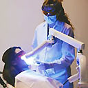

Синий спектр видимого света с длиной волны 405-415 нм показал высокую активность против патогенных бактерий, вырабатывающих чёрный пигмент и являющихся обитателями ротовой полости, а также против патогенных бактерий, вызывающих заболевания периодонта.
Согласно данным д-ра Nikosa Soukos и его сотрудников из Forsyth Institute (Бостон, штат Массачусетс, США), отбеливание зубов синим спектром видимого света убивает бактерии, являющиеся обитателями ротовой полости и вызывающие заболевания периодонта. Во время исследования эффективности галогенового света для отбеливания зубов было обнаружено, что он также уменьшает воспаление дёсен. В связи с этим было решено исследовать воздействие света на флору ротовой полости.

Ранее было известно, что синий спектр видимого света более эффективен для уничтожения бактерий, содержащих чёрные порфирины, чем красный и зелёный спектры. Также считается, что некоторые железосодержащие бактерии, продуцирующие чёрный пигмент ротовой полости, включающие Porphyromonas gingivalis и Prevotella intermedia, вызывают периодонтиты. Доктор Soukos с коллегами исследовали влияние синего спектра света на четыре типа штаммов бактерий, вырабатывающих чёрный пигмент: P.gingivalis, P.intermedia, P.nigrescens и P.melaninogenica.
Культуры этих бактерий, подвергнутые действию синего света с длиной волны 405-415 нм, погибали в течение нескольких минут, в то время как Streptococcus constellatu, использовавшийся в качестве безпигментного контроля, оставался интактным. Бактерии, содержащие много порфиринов, были более чувствительны к облучению. Например, P.intermedia, у которой содержание порфиринов составляет 267 нг/мг белка, погибали в первые секунды облучения, тогда как P.gingivalis, содержащая порфиринов в 100 раз меньше, оставалась в течение 5 минут жизнеспособной, пока её фоточувствительные порфирины не окислились и не разрушили липиды, протеины и нуклеиновые кислоты.
Также исследователи облучали синим светом микроорганизмы, выделенные из соскобов с зубов и десневых карманов людей, страдающих заболеваниями периодонта. Исследования проб ДНК подтвердили, что синий спектр света селективно убивает 4 вида бактерий, продуцирующих чёрный пигмент, из 600 видов микроорганизмов, обитающих в десневых карманах. Исследователям удалось селективно уничтожить эти 4 вида микроорганизмов и в десневых карманах.
Исследователями было протестировано 40 проб ДНК, специфичных для разнообразных микроорганизмов, включая 15 патогенов, вызывающих заболевания периодонта. Синий свет также подавлял в разной степени другие патогенные микроорганизмы ротовой полости, включая четыре вида Fusobacterium. Однако, на настоящий момент учёным неизвестно, какой фоточувствительный компонент продуцируют эти штаммы.
При преобладании в ротовой полости патогенных микроорганизмов целесообразно проводить лечение, которое будет селективно подавлять штаммы, вызывающие заболевания дёсен. Такое лечение будет более эффективным, чем доступные в настоящее время методики, которые уничтожают не только патогенные микроорганизмы, но и нормальную микрофлору ротовой полости.
Наблюдения, описанные в журнале Antimicrobial Agents and Chemotherapy (2005, 49:1391-6), подтверждают мнение д-ра Soukos и его коллег о клинической значимости действия синего спектра света в профилактике, контроле и лечении заболеваний периодонта.
Не исключено, что эта технология может быть самым важным достижением в поддержании здорового состояния ротовой полости со времени изобретения зубной щетки. Планируется проведение пилотного исследования у 11 добровольцев, которые будут пролечены с помощью специальных зубных щеток, излучающих синий свет на дёсны.
В заключении следует отметить, что такое простое и безвредное средство как синий спектр света может существенно помочь в контроле за заболеваниями периодонта.
Pain-free blue brightens smiles, zaps periodontal problems.
ASM News, July 2005.